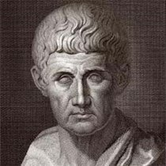
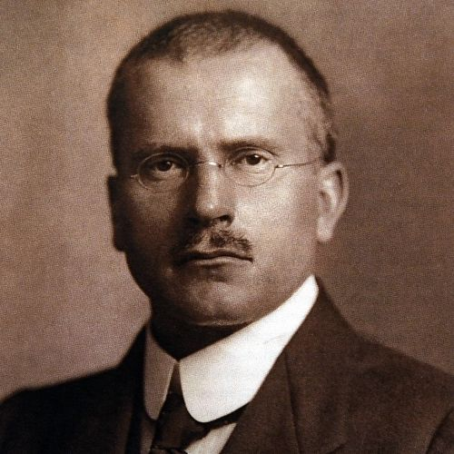

Seja bem vindo(a)! A Raru está aqui para te ajudar a entender oque você realmente é, deseja e quer.
Somos uma empresa que procura ajudar as pessoas a se encontarem, se bem que, nem todos que vagueiam estão perdidos.
COMO A RARU SURGIU
Em um dia chuvoso, o fundador da Raru, Gabriel Rodrigues, estava tomando seu café com leite , como fazia todas as manhãs, e como em todas as manhãs, se perguntou se estava contente com a vida que levava, se era importante as coisas que fazia e se era amado com quem convivia. Se fez essas e outras perguntas, mas achou poucas respostas. Dez anos depois, resolveu desenvolver um site, um site que ajudasse as pessoas e terem respostas que ele demorou dez anos para encontrar. Mas a resposta para que ? Para a vida!
"Somos aquilo que fazemos repetidamente. Exelência, então, não é um modo de agir, mas um hábito".
Aristoteles
"Sua visão se tornará clara somente quando você olhar para dentro do seu coração. Quem olha para fora, sonha. Quem olha para dentro, acorda".
Carl Gustav Jung
ESTAMOS AQUI PARA AJUDAR
Você deve estar se perguntando como iremos te ajudar, e a resposta é simples. Mais de cinquenta e cinco Filósofos e Psicólogos foram contratos para montarem perguntas que traçariam o perfil das pessoas que respondessem as questões, e assim desenvolvemos um algoritmo que te dará respostas como a profissão ideial, as pessoas ideais para a vida, os locais para ir. E, é claro, coisas que você precisará evitar, pelo menos, à curto prazo.